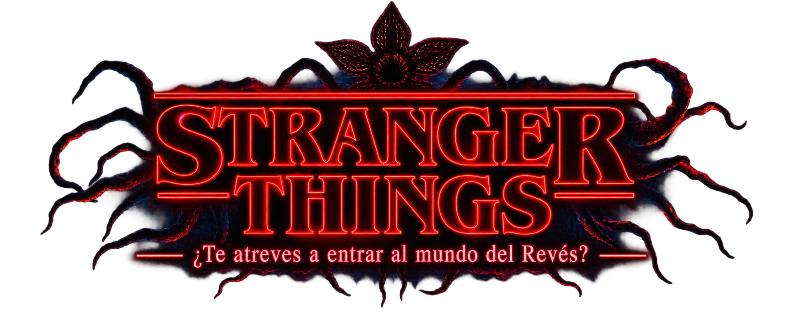

PERSONAJES
Los personajes de Stranger Things son una parte fundamental de la historia. Cada uno aporta habilidades, personalidad y valentía para enfrentar los misterios de Hawkins y las amenazas del Mundo del Revés.
Eleven
Una niña con poderes psíquicos que escapó de un laboratorio secreto. Es valiente, leal y una de las protagonistas más importantes de la serie.Mike Wheeler
Es el líder del grupo de amigos. Siempre está dispuesto a ayudar y demuestra un gran cariño por Eleven y sus amigos.
Will Byers
Su misteriosa desaparición da inicio a toda la historia. Es un joven amable y valiente que logra sobrevivir a los peligros del Mundo del Revés.
Dustin Henderson
Destaca por su inteligencia, sentido del humor y creatividad. Siempre encuentra soluciones a los problemas y es uno de los personajes más queridos.
Lucas Sinclair
Es valiente, responsable y protector. Aunque suele ser precavido, nunca abandona a sus amigos cuando más lo necesitan.
Max Mayfield
Se une al grupo en temporadas posteriores. Es una joven fuerte, independiente y muy habilidosa, que enfrenta grandes desafíos a lo largo de la historia.
Jim Hopper
Es el jefe de policía de Hawkins. Protege a los habitantes del pueblo y se convierte en una figura paterna para Eleven.
Joyce Byers
Madre de Will y Jonathan. Nunca pierde la esperanza de encontrar a su hijo y demuestra una gran fortaleza y determinación.
Steve Harrington
Comienza como un estudiante popular, pero con el tiempo se convierte en uno de los personajes más valientes y protectores del grupo.
Nancy Wheeler
Es una joven inteligente y decidida. Junto con Jonathan investiga los misterios de Hawkins y lucha por descubrir la verdad.